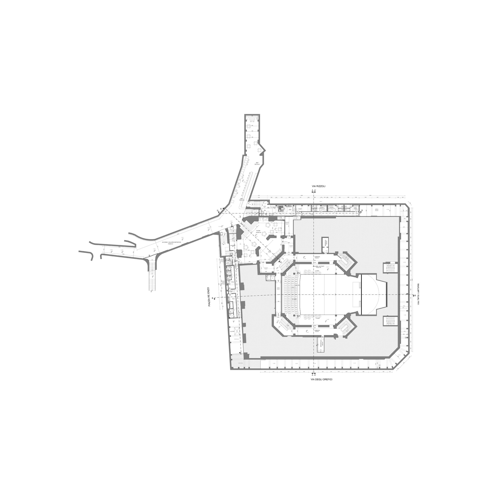

Exhibition map

All items
A text alternative to the map above, for keyboard and screen-reader
users and for anyone who prefers a list: every item, in the same
order as items.json, with a note when it isn't placed
on the map yet.